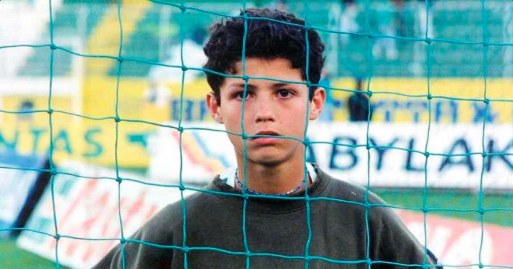

Childhood & Early Life
From humble beginnings to global stardom

Ronaldo's passion for helping children stems from his own challenging childhood
Born in 1985 in Madeira, Portugal, Cristiano Ronaldo grew up in poverty with his gardener father, cook mother, and three siblings. Named after Ronald Reagan, his childhood was defined by hardship – the entire family shared a single room in their tin-roofed home.
At just 12, Ronaldo made the life-changing decision to leave home for Sporting Lisbon's academy. His father's alcoholism cast a shadow over family life, but his mother remained his unwavering supporter, working multiple jobs to fuel his football dreams.
"We were a little poor, but I had a happy childhood. I didn't have toys and I shared a room with my brothers, but I was happy. I played football in the street with my friends with no shoes, just a ball." — Cristiano Ronaldo